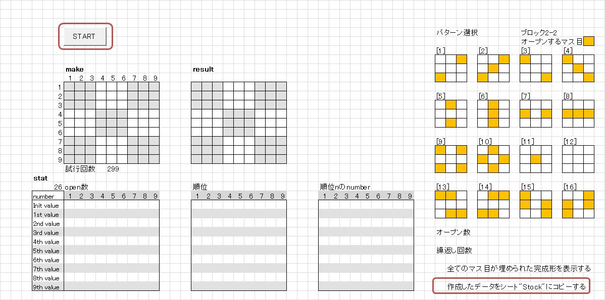
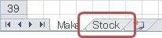
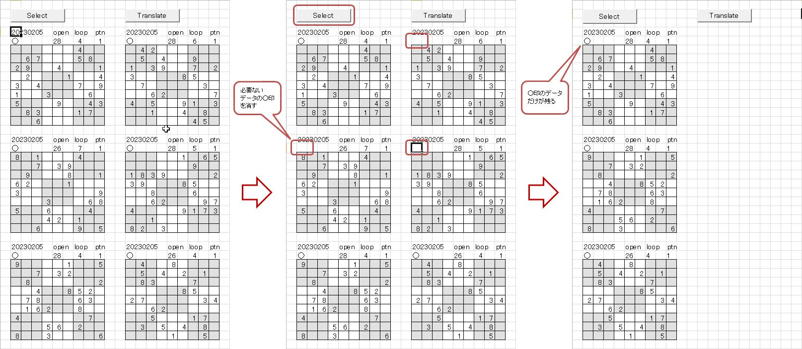
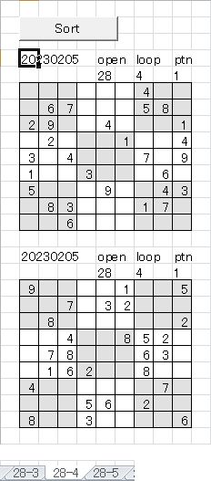

｢数独問題作成ツール｣ ちゅ～とりある
-
エクスプローラーから｢z.suudoku_03.xlsm｣を開きます。
[Make]シートの右下の｢作成したデータをシート"Stock"に移動する｣にチェックが入っていることを確認します。
-
｢Start｣ボタンを押します。
しばらくすると、｢Congratulations!｣というメッセージボックが表示されます。
-
｢Stock｣シートタブをクリックします。

作成されたデータが表示されています。
データのヘッダーに○印がついています。
データが複数表示されている場合は、記録する必要のないデータの○印を消します(1つしかない場合は○印は消さないで下さい)。
(私見ですが、残すデータは繰返し回数の少ないデータにするのが吉です)
｢Select｣ボタンを押すと○印のついたデータだけが残ります。

-
｢Translate｣ボタンを押します。
しばらくすると、データが消えてしまいます。でも、大丈夫です。
ディスプレイの下に表示されているタスクバーのエクセルのアイコンにカーソルを合わせると(①)、
｢suudoku_dat.xlxm｣のポップアップが出て来るのでクリックします(②)。
最初に[log]シートが表示されますが、 先ほど○印をつけたデータのヘッダー情報がリンク付きで、格納した日付の後に並んでいます。

リンクをクリックすると、データが格納されているシートの当該データが表示されます。

-
1.から4.の操作を繰り返すと、データが格納されているシートのデータ数が増えてきます。
各シートにはオープン数が同一で、難易度が同じと考えられるデータが記録されています。
｢Sort｣ボタンを押すとパターン(※)毎にデータを並び替え、オリジナルデータが表示されているブロックの下に表示されます。
(元々時系列で表示されているオリジナルデータは変更はありません)
※パターンは1.の右上に表示されている3x3の真ん中のブロックで、予めナンバーがオープンされるマス目のパターンです。